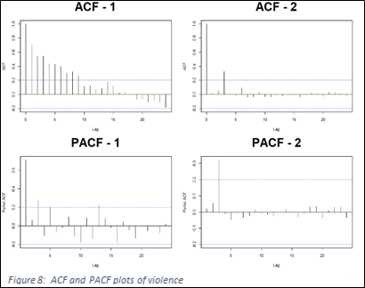

SPATIOTEMPORAL FORECASTING ANALYSIS OF VIOLENT EVENTS IN SYRIA
-Integrating statistical software with GIS to forecast future Violent Events in Syria -
By William Gatens
A Capstone Project presented in Fulfillment
of the Requirements for
the Masters of Science in Geospatial Analysis
MSGA Program
University of Mary Washington
Fredericksburg, VA
July 1, 2019
Advisory Committee:
ABSTRACT
Unrelenting chaos found in zones of conflict produce fear and confusion for all those who experience it and constant uncertainty for those on the outside who seek to understand or help. The Syrian Civil War, characterized by fluid battle lines and numerous belligerents, represents the most recent example of such an issue. Since 2011, the conflict has devastated most of the country�s population centers, contributed to the displacement of over 6 million individuals and caused the deaths of an estimated 570,000. This study seeks to establish a forecasting method capable of predicting the location and quantity of violent events using an autoregressive integrated moving average (ARIMA) model. The model demonstrates the ability of a near real-time open source dataset, known as the Global Dataset of Events Language and Tone (GDELT), to provide accurate spatio-temporal event information that is needed for this level of analysis. The advantages of using GDELT are explored in depth, including the extraction of multiple event types, which provides the opportunity to develop correlation measures to enhance the accuracy of predictions. The entire process is documented within a single R coding language script which acts to extract, edit, analyze and display the data in detailed order, allowing for possible reuse in other areas of conflict.
ACKNOWLEDGEMENTS
I thank both my friends and my family for providing me the support to advance my academic career. The availability of help and encouragement provided to me during my time at Mary Washington pushed me to exceed my own expectations, for which I am grateful. I would also like the University for supplying me with incredible academic resources in the form of instructors, facilities and materials. My six years at this institution have provided me with a great deal of growth which I will take with me through the years to come.
ABSTRACT ............................................................................................................................. 1
ACKNOLEDGEMENTS ............................................................................................................ 2
TABLE OF CONTENTS ............................................................................................................ 3
LIST OF FIGURES .................................................................................................................... 4
CHAPTER I�INTRODUCTION ................................................................................................ 5
1.1 Background.................................................................................................. 5
1.2 Problem ....................................................................................................... 7
1.3 Importance of Study .................................................................................... 7
CHAPTER II�LITERATURE REVIEW ....................................................................................... 8
2.1 Complex Models .......................................................................................... 8
2.2 ARIMA Model............................................................................................... 10
2.3 GDELT Dataset.............................................................................................. 12
2.4 Study Area.................................................................................................... 14
CHAPTER III�METHODS ....................................................................................................... 15
3.1 Data Extraction............................................................................................. 15
3.2 R-Studio........................................................................................................ 18
3.3 Time Series Formatting................................................................................ 18
3.4 Forecasting................................................................................................... 22
CHAPTER IV�RESULTS ......................................................................................................... 25
4.1 Accuracy....................................................................................................... 25
4.2 Violence Predictions..................................................................................... 30
CHAPTER V�CONCLUSION .................................................................................................. 34
CHAPTER VI�FUTURE RESEARCH......................................................................................... 37
BIBLIOGRAPHY....................................................................................................................... 40
ARIMA Forecast R-Script........................................................................................................ 45
Honor Pledge......................................................................................................................... 51
FIGURES
|
Figure |
Description |
Page |
|
1 |
Locator Map � Syria |
6 |
|
2 |
ARIMA Model |
11 |
|
3 |
ARIMA model with regressor |
11 |
|
4 |
CAMEO Event Codes |
14 |
|
5 |
CAMEO Violent Event Root Codes |
15 |
|
6 |
Syria � Sub-District Boundaries |
16 |
|
7 |
Google Big Query Extraction View |
17 |
|
8 |
ACF and PACF Plots |
20 |
|
9 |
Time Series Stationary Test Classifications |
22 |
|
10 |
ARIMA R � Script Workflow |
24 |
|
11 |
ARIMA R - Script |
25 |
|
12 |
ARIMA Absolute Errors |
26 |
|
13 |
Total Absolute Errors Above 30 |
26 |
|
14 |
Count of Districts With Mean Absolute Errors Above 30 |
27 |
|
15 |
Predictions and Actual Counts |
28 |
|
16 |
Stationary Predictions and Actual Counts |
28 |
|
17 |
Differenced Predictions and Actual Counts |
29 |
|
18 |
Moving Average Predictions with Lags and Actual Counts |
30 |
|
19 |
Multi-Faceted Violence Map |
33 |
|
20 |
T-map �View� mode |
34 |
|
21 |
Carto Development |
39 |
1. Introduction
1.1Background of Syrian Civil War
The country of Syria, formally known as the Syrian Arab Republic, is located in Southwestern Asia at the eastern extent of the Mediterranean Sea. It is bordered by Turkey to the north, Jordan to the south, Israel and Lebanon to the west and Iraq to the east (Figure 1). Since 2011, a civil war has fragmented the country and brought devastation through a level of violence unequaled in the 21st century. The conflict has claimed the lives of an estimated 511,000, left 80,000 individuals missing, caused the emigration of 5.1 million and internally displaced over 6 million (HRW 2018). To understand the origins of the ongoing conflict, a brief history of the nation�s formation is necessary.
The controlling power of Syria, during World War I, was the Ottoman Empire. Following its defeat, the area became occupied by French forces through the 1916 Sykes-Picot Agreement. Under the mandate system generated by the League of Nations, France acted as a trustee to Syria until 1946 when the independent state of the Syrian Republic was created (Grainger 2016). Political instability plagued the nation between 1946 and 1970, until a Baathist party regime headed by dictator Hafiz al-Assad managed to seize power through an uncontested military coup in November 1970 (Grainger 2016). In 2000, after the death of his father, Bashar al-Assad assumed control as dictator which began a long series of protests from various pro-democratic groups. The Arab Spring, a series of anti-government protests in the middle east, began in 2011 and quickly led to the resignations of the presidents of both Egypt and Tunisia. After the March 2011 arrest and torture of 15 boys, one of whom was killed, Syrian protestors responded with large public demonstrations (AlJazeera 2018). Bashar al-Assad responded violently to the peaceful protests, killing hundreds and imprisoning thousands. Protesters responded quickly with the organization of opposition groups who armed themselves in many of the large urban centers within the nation (Reuters, 2018).
During the early stages of the conflict in Syria, the lines were somewhat clear between pro-government and anti-government lines. However, many other groups have inserted themselves into the fight in hopes of territorial gain from weakened enemies after years of violence. The number of operating factions is now difficult to identify, but the four primary groups appear to be the pro and anti-government forces, the Islamic State (ISIS) and the Kurdish People�s Protection Units (PYD) (CFR 2017). The pro-government forces are composed of the Syrian Arab Army (SAA), Hezbollah, and groups of foreign Shia militants (CFR 2017). Opposition forces are composed of the Free Syrian Army (FSA), Syrian jihadists and Jabhat Fatah al-Sham (JFS), formerly known as al-Nusra. ISIS, primarily composed of foreign fighters, aimed to establish a new state by dissolving the borders of both Syria and Iraq (CFR 2017). Lastly, the YPG, of the primarily Kurdish region in northern Syria, seek autonomy along with a decentralized Syria and have been a primary force in the battle against ISIS (CFR 2018). The primary groups involved in the fighting are also aided by the worlds powerful nations who supply money, training and arms to those groups aligning with their own agendas. Backing the pro-government forces are Iran and Russia, and those providing for the opposition forces are the nations of the Gulf Cooperation Council, Turkey and the United States. The involvement of powerful nations has only acted to increase the unpredictability and ferocity of fighting within the country which has experienced no shortage of munitions.
1.2Problem
This paper examines a methodology for predicting future violent events resulting from the civil war within the country of Syria at the finest geospatial scale possible using open sourced data. Multiple variables representing types of events occurring within a defined spatial area in a time series format will be used as predictors of the events.
Using the past trends of violent events and correlating non-violent events as independent variables, this analysis aims to model monthly violent event counts within each administrative division of Syria over an 8 year period. The processes developed incorporate a blend of techniques extracted from research found within a variety of fields in an attempt to generate the best model possible (Yonamite, J. 2013; Lin et al. 2017; Shuvu & Rongrong 2017; Sangar 2018). The product of this analysis will include a discussion about the trends found throughout the time series and relate them to real world events. This will be completed with cartographic displays which can be viewed statically, or interactively with the use of ArcGIS pro, and cartographic libraries within the R statistics program.
1.3 Importance of Study
The importance of a violence forecasting model is most relevant to civilian populations, those who are most impacted by the unforeseen events within Syria. Unexpected airstrikes, armed mobilizations and planted explosives have each contributed to the deaths of an estimated 570,000 civilians between 2011 and 2018 (Syriahro, 2019). This model could be used as a tool to inform decisions about civilian relocation to either the civilians themselves or to one of the numerous organizations providing aid within the war-torn areas. Multiple accounts have surfaced from civilians residing within the embattled cities who have no resource to turn to, live in fear of unseen threats from above and are often constrained to hours, often minutes, to make decisions that impact their own futures and those of their families. Individuals would be able to use information from predictions to weigh their own options, especially when violent events are known to target civilians (al-Dyab, 2019; Yee and Saad, 2019).
2. Literature Review
The following sections will detail academic material relevant to each step in the completion of this analysis. The first step, identifying a suitable model, was a significant undertaking because the idea of predicting violent events with open source, geospatial material is not new to the GIS field. Therefore, it is necessary to explore the characteristics of prospective models within the limitations of the data available, but also to find those able to achieve the goals of this study. Following the initial sections involving forecasting model descriptions is an explanation of data sources and a review of the geographic study area.
2.1 Complex Models
Among the most used forecasting model approaches is the hidden markov model (HMM) approach, which estimates the probabilities of particular sequences composed of random variables (Jurafsky & Martin, 2018). One example of such work uses a collection of characteristics for state and nonstate actors to estimate future actions based on a combination of political and military characteristics within a place in time (Hossian et al., 2018). However, the HMM approach assumes that the probability of an event occurring at time T+1 is a function of the present characteristics at time T, rather than an estimate based on T-1, T-2 and so on (Jurafsky & Martin, 2018). In other words, the probability of an event based solely on T may not account for previous trends, which may contradict the events at T. This can be misleading in the presence of a prolonged conflict such as the Syrian Civil War, in which there are notable seasonal, monthly and annual trends from which assumptions may be constructed. For example, multiple belligerents entered the conflict after fighting had already been underway for two years. The increase in the number of fighting groups led to a gradual increase in the number of violent events documented within the country over time. Also, climatic patterns in Syria feature very hot summers and cold winters which could have an impact on the decisions of large military operations.
When conflict data is available in more precise spatial detail, researchers capitalize by incorporating point process models which seek to forecast violent event locations by incorporating the spatial pattern of past influencing events (Zammit et al., 2012; Lewis et al., 2012; Wang et al., 2012). However, such data accuracy is not often found within open source datasets and if it is, there may be a significant lack of accuracy or notable gaps which skew spatial and temporal correlations. The dataset used for this research, described in section 2.3, contains small portions of high spatial resolution events, yet without complete accuracy the ability to apply point patterns is lost and aggregated units must be used.
Another branch of event forecasting is the evaluation and prediction of known group actions, such as the terror related incidents Enders and Sandler modeled by way of a threshold autoregression model (TAR) (Enders & Sandler, 1993). In this context TAR aimed to forecast terror attacks in response to specific types of government policies, rather than the occurrence of past attacks alone. While this method includes the intended aspect of multivariate correlations, it does so beyond the scope of this research by considering cultural values of various internal groups. Without precise spatial and cultural information of the actors, or knowledge of political influence zones through the ebbs and flows of conflict, it would be inappropriate to apply such a model. Here it is necessary to consider the quality of data available with opensource material and to limit the priorities of this research to the where and when, thus excluding the who, what and why.
2.2 ARIMA Model
The Autoregressive Integrated Moving Average (ARIMA) forecasting model is a widely used forecasting method for those seeking to model event counts, financial data and population estimates (Brandt et al., 2000; Mestel & Gurgul, 2003; McDonald-Johnson et al., 2007, Yonamite, J., 2013). Many studies have displayed the ability of the ARIMA model to match or exceed the abilities of more complex models such as VAR and LSTM (Lin et al., 2017; Shuvu & Rongrong, 2017). Exceptional performance is attributed to the model�s simplicity, especially after the introduction of automated model fitting to forecasting packages in most of the popular statistics packages (Pascual, 2014; Mondal, 2004). The ARIMA model is as follows:
Yt=c+ϕ1ydt−1+ϕpydt−p+...-θ1et−1-θqet−q+et
Figure 2: ARIMA model
where e is an error term, t is time and c is a constant. The coefficients of the autoregressive and moving average terms are represented by Φ and θ respectively. The number of autoregressive terms to include in the model are identified by parameter p and the number of moving average terms by q. Parameter d represents the order of differencing, meaning the number of previous observations to be differenced to achieve stationarity.
The ARIMA model allows for the inclusion of additional predictors, called exogenous variables, covariates or x-regressors. Inclusion of predictors allows for the examination of influencing event types which could enhance the ability of the model to predict the number of future violent event occurrences. These variables are supplied in the form of non-violent event time series collected for each sub-district unit. The ARIMA model simply applies the same autoregressive part of the previous model to the predictor series, then multiplies it by the regression coefficient. The formula for an ARIMA(1,0,1) model, in the format of ARIMA(p,d,q), with the addition of one regressor is as follows:
Yt=c+ϕ1yt−1-θ1et−1+ β(xt - ϕ1xt-1)
Figure 3: ARIMA model with one regressor
In this model there is only one autoregressive term, one moving average term and β is the coefficient of the predictor x at time t. This can be explained as the fitting of an ARIMA model to the errors of the regression of Y on X (Nau 2014). Each time an additional predictor is added to the model the same process of applying the autoregressive part and multiplying the regression coefficient is followed on the right side of the equation. This research identified a total of six predictive variables which contributed to the violent event forecasting ability of ARIMA.
When used in a geospatial context, especially one which deals with multiple spatial aggregations and thus many separate time series, the work involved to estimate and fit an ARIMA model is enormous. The auto.arima package, developed by Hyndman and Khandakar in 2008, is an answer to this problem which applies automated assessments to gather and monitor results for predictive parameters. This is done by using a stepwise procedure to fit multiple ARIMA models with varying parameter values for each unique time series, thus producing an efficient and accurate model structure. For the purpose of this research, I have decided to use a combination of an automated model fitting algorithm with inputs I have modified myself. Reasons for this stem from unsatisfactory results or failures received from a wholly automated process when handling low violence regions. These regions are composed of peaceful zones which experienced little to no conflict during the study period, or experienced short periods of notable conflict events. The manual application of limiting factors to account for these few regions enhanced the ability of the model to run uninterrupted.
2.3 GDELT Dataset
The Global Database of Events Language and Tone (GDELT) is an open data resource which monitors, extracts and georeferences thousands of print, broadcast and web sources from around the world (GDELT 2013). The few initial entrees of the database extend back to 1979 but have since evolved into a massive archive exceeding 1.5 billion references of geographic data which now updates every 15 minutes (GDELT 2013). Two recent additions to the longstanding Global Events Database, known as the Global Knowledge Graph (GKG) and the Event Mentions, were released with GDELT 2.0 in March of 2013. The GKG, sizing in at 2.76 TB, �expands GDELTs ability to quantify global human society beyond cataloging physical occurrences� (Qiao & Chen, 2016). This dataset is an attempt to measure the reactions from events as a form of gauging and locating emotions in response to particular characteristics of an occurrence. While this dataset is not used for the purposes of this research, it offers an interesting avenue for the continuation of this work.
This research utilizes the Event Mentions dataset which exists as an archive of events found within the Global Events Database filtered with duplicate elimination processing. This ensures that there is only one event per mention and that the event is not confused with separate sources or anniversary reporting. The Global Event Dataset is a Conflict and Mediation Event Observation (CAMEO) classified, geolocated time series. Each event listed by GDELT contains a two digit event code with values between 01 and 20, as well as separate four digit event root codes with values ranging between 0001 and 2042 (CAMEO, 2012). Each of the event codes relates to a broad event description such as �Appeal (02)�, �Yield (08)�, �Exhibit Force Posture (15)� or �Fight (19)�. The event root codes are more detailed, but still briefly describe an event such as �Expel or deport individuals (0174)� or �Demand de-escalation of military engagement (1056)�. In addition to these GDELT fields are the classifications of actors, non-state actors, religions and ethnic groups, each with unique values well described in the CAMEO code book (CAMEO 2012). The complexity of actor identification in the forecasting process is beyond the scope of this research; however, these fields provide a sense of the detail available within the dataset. This research will be centered on the event codes, specifically those which fall under a violent event type of classification seen in figure 4 (red). The subset of violent event codes are composed of the root codes listed in figure 5, including all 27 violent event sub-types.
2.4 Study Area
Syria is about 1.5 times the size of Pennsylvania, occupying 187,437 square kilometers of the Middle East (CIA, 2018). The country is organized into three administrative units which extend from the size of small U.S. states, to the level of a small to medium sized U.S. county. Within the GDELT dataset, each action is listed with a pair of coordinates and a geographic type field which specifies the accuracy of each listing. It was fortunate that each of the events extracted during this time period were listed as either exact coordinates, or as sub-district units. This information allowed for the use of 267 sub-district divisions of Syria to aggregate all data and products of this analysis (figure 6). Population statistics are unreliable due to the mass exodus of refugees and the influx of undocumented foreign fighters throughout the years of civil war. It is known that about 8.1 million refugees have migrated away from the violence, 2.5 million of them children (UNICEF, 2018). It is also known that the primary areas affected by destructive battles are urban centers which are almost all located in the western portion of the country where a mild Mediterranean climate is more habitable. These regions have/had high population density and were thus partitioned into smaller sub-districts. Population density is very sparse in the hot desert climate which dominates the inland and eastern divisions of the
3. Methods
Each of the processes involved in the prediction of future events in Syria brought unique obstacles and interesting learning experiences. From the initial data collection steps, to the visualization of the final results, I have explored corners of the GIS field that would have otherwise gone unnoticed. The following sections will document each of the processes, their specific problem and the eventual establishment of their solutions.
3.1 Data Extraction
Following examples outlined on the GDELT site, I experimented with different methods of extracting data from the partitioned table copy of the entire Global Events Database housed in the Google Cloud Platform�s BigQuery. Ultimately, I utilized the SQL query editor in the Google BigQuery user interface specifying the extraction of all rows with action occurring within the country of Syria after the year 2010. This simple query produces processes 65.5 gb of data and provides 7,396,620 records, which can be immediately visualized with the Google Cloud Console�s data studio (figure 7). From here, the dataset was aggregated into sub districts by utilizing a shapefile uploaded to Google cloud and using a command within the data studio which added an additional field containing the administration unit 3 name. The final exported master file for this analysis is a 25,632 x 26 Excel file representing each of the 20 CAMEO coded event types, objectID, three administrative codes, a total violence sum and a time field coded in MMYYYY format.
Most of the research involved with violence forecasting neglects the use of a spatial variable for their predictive models, which is important in the understanding of the growth or decay of attacks throughout time and space in the conflict. Weidman and Ward highlight such incorporation when researching spatiotemporal characteristics and forecasts of Bosnian violence in the 1990�s. This research examined the ability of neighboring violence counts to increase forecasting accuracy, concluding that �the incorporation of spatial dependence into the prediction procedure improves predictive performance across all examined scenarios� (Weidman & Ward, 2010). The incorporation of a spatial variable in this research was based on the previously mentioned work, eventually becoming a one-month lagged sum of violent events found in neighbors. Following the framework of Weidman and Ward, the spatial lag was limited to 1, with an assumption that the higher order neighbors do not provide enough influence to be included in the predictive model. To complete this, a spatial weights matrix with queen�s contiguity was created for the sub-district shapefile of Syria and converted to a table in ArcGIS Pro 2.0. This was then used in a join operation which produced a table referencing each sub-districts� neighbors and the values of violence for each time period. The table was then modified in Excel to display the sum of all neighboring values for each sub-district before join and field calculations were conducted in ArcGIS.
3.2 R-Studio
To implement a time series forecast I attempted multiple software platforms; however, I have found R-Studio to be the most well documented, public resource available. Initially, the use of Python through Jupyter Notebook brought the power of automation and collaboration which aligned with my goal of eventually creating a near real time prediction made available in an online setting. However, without the in-depth knowledge of libraries and documentation on the subject within the platform, I decided to search elsewhere. R-Studio offers a plethora of useful packages which allow for the smooth generation of interpretable statistical analysis, the visualization of outputs with the use of mathematical and geographic plotting functions and possesses an enormous, active online community.
3.3 Time Series Formatting
In order to implement an accurate time series forecast with an ARIMA model, the dependent variable time series, violent event counts, must be analyzed for stationarity. This is the property of a time series with constant mean and variance over time, often requiring the use of a differencing method or a transformation (Sangar 2018). The daunting task of fitting each of the 267 time series with multiple methods was undertaken with the use of online resources, R�s documentation resources and a large quantity of trial and error. To begin, the violent count time series of each administrative unit was extracted from the master file into a separate csv file. The file was then imported into R studio and transposed as a 96 x 267, dataframe object with each row representing a month in time between January 2011 and December of 2018. Each of the columns represented an individual administrative area, save the first which held the temporal information. The library �ts� was installed to create recognized time series in R format by defining the data range and the date range within a loop which updated a counter variable to cycle through each row of the dataframe. Prior to testing, three sub-districts were recognized to have no violent events throughout the entire conflict period and were thus excluded from the analysis as NULL values.
The first method to confirm stationarity is one completed manually with the use of autocorrelation function (ACF) and partial autocorrelation function (PACF) plots (Figure 8). ACF plots are a tool used to identify randomness by measuring the autocorrelation of a dataset with itself at different time lags (NIST 2013). Datasets with significant lags, those which are seen above the blue confidence interval in ACF � 1 shown below, are those which possess high autocorrelation values. Significant lags are an initial indicator of non-stationarity but are not definite measures. If a dataset is random, it�s autocorrelation values will display steep slopes nearing zero, as in ACF � 2 seen below. This indicates that earlier lags are less correlated with present values in the dataset, or that past values at time Yt-x are not as correlated with values found at time Yt. The additional measure of PACF essentially removes additional variation explained by earlier lags and accounts for the remaining correlation found by the error terms by moving to the next lag value from the prior ACF. The variations present in the ACF that are removed by PACF include seasonality, trend and residual correlation, all found within ACF, which explains the �partial� in its name. What can be seen in the PACF - 1 plot below is a continued correlation from the ACF plot, indicating remaining correlations and a need to return to the dataset for other stationary conversion methods. The remaining plot, PACF � 2, displays the results of the ACF and its extraction of the autocorrelation detail, meaning this administrative unit contains a more stationary series. Of the 264 sub districts analyzed, 118 were found to
|  |
The nonstationary values were first differenced by a lag order of one before moving into the next evaluation method, the Ljung-Box test which identifies the presence of significant correlations between lags 1-20 (AWS 2016). R offers built in testing ability for this process, which only needs to be called with �Box.test�. After the run is complete it is necessary to identify the test�s p-values for significance. Those time series exceeding a value of 0.05 are said to be nonstationary and those below are more likely to be classified as stationary. Of the previously identified non-stationary figures, 24 were highlighted as stationary in this assessment, but remained within the nonstationary values for further testing. Next, an Augmented Dickey-Fuller (ADF) Test was completed which provides a measure of stationarity and whether or not a series should be differenced to acquire stationarity via the presence of a unit root (Wang 2009). Those series with p-values above 0.05 indicate a rejection of the null hypothesis which is a stationary time series. Series which do not pass the ADF test should be differenced and re-run until stationarity is secured (Wang 2009).
Outputs of the ADF test for the previously identified nonstationary series showed that 41 of the lag one differenced time series did not pass this assessment and thus were separated into a second nonstationary set for further analysis. The remaining nonstationary values were then differenced by a lag order of 2 and resubmitted for testing which confirmed stationary characteristics for 28 series. Finally, the 11 non-stationary sub districts were revealed to hold stationary characteristics only when sampled as a moving average of the previous three months. Each of the assessments described here were conducted to gather characteristics about each of the time series to use as inputs for a formatted ARIMA forecast. The actual transformations were not imposed on the time series as this is to be done by adjusting the model parameters of p, d and q for each sub-district stationary transformation group (figure 9).
Figure 9: Time Series Stationary Test Classifications
In addition to the lagged values of the dependent variable and error terms, the model will include regressors which document the non-violent event counts and neighboring violence counts of each site. These values will act to improve the accuracy of the predictive model by providing correlating values with which to estimate. To add these values, the forecasting script detailed in figure 10 was simply run multiple times with the addition and elimination of regressors from the non-violent event types shown in figure 3. After each run, the results were compared to identify which subset of predictors produced the lowest Akaike�s Information Criterion (AICc) value which provides a measure of model performance (Hyndman & Athanasopoulos, 2018). After multiple runs with all of the variables, it was apparent that the non-violent event types of aid, disapprove, threaten, coerce and protest were the most complete in terms of event counts per month, and also produced the best AICc values. These values were combined with the additional variable of neighboring violence values to compose the final set of predictors added to the ARIMA forecasting model.
3.4 Forecasting
To generate forecasts for each of the 267 sub districts, a lengthy R script was created which utilized multiple loops to read, store and eventually merge all of the required datasets. The first step was to split the primary dataset containing 96 months of compiled event data per sub-district into individual files representing a full time series. This process also included the addition of column headers and the ordering by date for each (figure 10 � 1). This was an important step because each of the files are dealt with as matrices without a date column beyond this point. Instead, each new row represents a new step in a series rather than a specified date. Next, a for loop was used to iterate through each of the newly created sub-district CSV files to extract the sub-district name, the full set of validation violence values and create the empty matrices that would act as containers for the output forecasts. Within this iteration was a nested loop with a counter variable designed to specify a 60 month testing set (figure 10 � 2). This value increased by one month with each iteration, thus allowing for a moving test and validation set to maximize the potential of a short-term forecast. Therefore, the test set for each ARIMA forecast would be the same length and could be validated against the remaining months leading to 2019.
With each loop the 60 selected rows were extracted individually to create matrices, which are much simpler for R to deal with than dataframes. The independent variables of neighboring violence, aid, disapprove, threaten, coerce and protest were merged into a single matrix to comply with the standards of the model (figure 10 - 3). The dependent variable, number of violent events, was left in its own matrix. The formatted values were then used as inputs for the fitting of an ARIMA model (figure 10 - 4). Given the specific grouping of each sub-district applied during the stationarity testing, parameters were inserted into the ARIMA model for either p or d (figure 11). The first group were assigned no parameters as they were already stationary which was recognized and modeled accordingly. The second group, which required differencing, were defined with a starting differenced value of 1 and a maximum of 3. Finally, the moving average stationary values, were specified with a value of 3 for p.
A final function, called only after each sub-district had been estimated, created three output excel files for the absolute error of each prediction, prediction and validation values for each of the sub-districts (figure 10 - 5). The last step in the script is designed to join the output predictions to a blank shapefile of Syrian-subdistricts for ease of use.
4.1 Accuracy
Results of the ARIMA model were evaluated against the validation set with the use of a mean absolute error. This is the measure of the average of the absolute value of the difference between the actual and predicted values. Due to the lack of a benchmark from which to base these findings, I have defined a prediction error threshold of 30 as the measure of an accurate forecast. To demonstrate the effectiveness of using additional regressors, I have included the results of three separate assessments for each measure presented. The first included no regressors, the second contained the single regressor of neighboring values and the third included the optimal regressors found through manual model iteration. These regressors were neighboring violence, aid, disapprove, threaten, coerce and protest. Additionally, I have separated the values by their stationary test result group to display the impact of nonstationary data with ARIMA.
The first assessment is the average absolute error for all predictions (figure 12). Each of the results display an average below the designated threshold as a whole. The lowest absolute average error was observed for the forecast conducted with regressors with an average of 28.6 events off of the actual value, followed closely by the forecast that lacked regressors which averaged 28.9. The nonstationary values requiring an adjustment of the autoregressive component generated the most errors which is seen in the much higher error averages in each of the ARIMA classes. The values of sub-districts belonging to this specific subset were examined further which revealed a time series composed of very low to no violence. Adjusting the parameters within this class did little to change the results found in the forecasts which highlights the need for a populated dataset when conducting this method of prediction.
The next assessment utilized the full set of results by counting the number of absolute errors over 30 for each sub-district�s time series (figure 13). Once again, the autoregressive adjustment group was the least accurate with the highest number of absolute errors above 30 in each of the three runs. The model predictions generated without regressors saw the greatest number of errors within the differenced stationary group, representing 289 of the 823 errors above 30. The results of this test echo the results of the average absolute error, showing the best predictions with the use of a full predictive regressor set. There are a total of 761 absolute errors above 30, representing 8.7% of the 8,712 total predictions produced. If the mean absolute error values below 30 are considered to be accurate predictions, this test produced a 91.3% forecasting accuracy rate.
The final assessment was based on an assessment of each sub district�s average absolute error and a count of those with average was over 30 (figure 14). This assessment was implemented to identify which districts are producing incorrect values in order to subset and re-examine them in hopes of realizing more accurate findings. The results show that the model conducted with regressors had the lowest number of sub-districts with a high average at 28, followed by the single regressor of neighboring violence at 29 and finally the model without regressors at 30. Once again, the moving average stationary group contributed most to the number of average errors above 30 in each of the stationary groups. The unmodified stationary group results displayed the most accurate results in the full regressor set forecast, with only 6 mean absolute errors above 30.
Figure 14: Count of Districts With Mean Absolute Errors Above 30
Viewing
the results in line chart format reveals that the incorrect predictions were extremely
low, which produces a much lower overall prediction value (figure 15). This
problem persisted through each iteration of ARIMA and can be attributed to
a handful of sub-districts where violence time series were
stationary, and experienced abrupt spikes in violence counts for brief periods
of time. Figure 16 displays this pattern for the stationary
prediction group which possessed a noticeable lack of abrupt increase
prediction ability. The model predictions appear to increase multiple months
after an actual violent event increase occurred. The characteristics of low
prediction values and post event spike responses are seen again within the
differenced dataset (figure 17). In this dataset, most of the actual violent
events occurred during the initial months of the study period. The actual
event count spike influenced the prediction values only after a period of about
5 months. The prediction value spike records lower values than the actual peak
of the actual event count and predicts a continued spike
about 5 months after the actual
spike had receded.
Figure 15: Predicted and Actual Counts
Figure 16: Stationary Predictions and Actual Counts
Figure 17: Differenced Predictions and Actual Counts
The trend of the ARIMA model�s delayed prediction responses in the presence of actual event count spikes was most obvious in the moving average formatted dataset predictions (figure 18). Here, the predictions appeared to trail event count spikes closer in both time and value compared to those of the other datasets with different stationary processing methods. The values shown in dark gray represent the actual prediction values of the moving average dataset and the red series indicates the actual event counts. By adjusting the results to display the predictions of one and two months ahead, shown in blue, the predictions were able to follow the trends violent event counts with a great increase in accuracy. With this information now visualized, for each of the prediction dataset types, it is apparent that prior values have too much influence on the prediction of future values. This problem could result from a general over adjustment of parameters within the model, or the need for a longer time series from which stronger trend, seasonality and average parameters may be collected. This research was limited to a time series composed of months during conflict for which there were somewhat constant violent event occurrences in all or most districts of Syria. The general cessation of conflict during recent months results in an inability to extend the time series without including an abundance of low or no values in districts, which will inevitably decrease the accuracy of results. Future research may find it useful to increase the size of spatial units during collection which would allow for an increase in the temporal frequency. The larger spatial units should be able to consistently provide enough values to meet the requirements for an ARIMA input dataset and would thus allow for a fragmentation of monthly values into weekly or possibly daily values. This would solve the problem of a larger time series, but would reduce the spatial resolution of the overall study.
Figure 18: Moving Average Predictions with Lags and Actual Counts
4.2 Violence Predictions
To visualize the results of the forecasts, I utilized the T-map package within R-studio. The T-map package includes flexible cartographic display capabilities which are similar in syntax and functionality to the widely use ggplot creative graphics package. The T-map package was called within a loop that collected and displayed each month and year of violence predicted in a single page with a multifaceted map file. The maps feature simple color schemes in which small changes over time are noticeable and differences in values are discernable (figure 16). This aided in the development of my calculations and scripts as it was an immediate visual aid displaying the results in a recognizable spatial format. The abilities to edit symbology for each of the maps were surprisingly plentiful, which allowed me to increase the transparency of borders and the RGB color values of each color in the classification scheme. In addition to the static multi-map option, the T-map library allows for changes in map types between �plot� and �view� which can transform products into more dynamic visuals with the use of leaflet. When the �view� mode is called, products cannot be easily visualized in multifaceted format; however, they can produce html formatted pages which have more formatting capabilities with online resources (figure 17). Options for the view mode include interactivity in the form of links or popups, animations which loop through output values along a time field and the ability to include any type of base map. One example of a view mode enabled map is seen below, but the process of creating multifaceted maps is inefficient and very time consuming which decreases it�s usefulness when applied to 33 output time periods. However, the T-map view mode possesses holds interesting capabilities which could be applied to future research products in an attempt to better utilize it�s strengths as a web-friendly geospatial output.
Figure 19: Multi-Faceted Violence Map
Figure 20: T-map �View� mode
5. Conclusion
This research achieved the goal of creating an outline of a multivariate ARIMA forecasting analysis of open source, spatial datasets of violent conflict. While the findings may have been somewhat inaccurate in certain locations, I believe that the analysis captured complex and abrupt increases in violence enough to warrant attention. The final video product of the predicted time series produced enough accurate records to follow the actual timeline of the war as each battle, bombing and atrocity was recorded by media sources. The largest battles such as Raqqa and Palmyra against ISIS, Damascus and Aleppo between government and rebel forces and Kobane in the north between the YPG and Turkish forces, are all represented. The key findings during the creation of this predictive model were the stationary testing and formatting process, the inclusion of external variables and the inclusion of mapping libraries within the automated process.
A stationary time series, required for any ARIMA model, may be the most difficult piece to acquire for any similar event-based time series analysis. This is simply due to the nature of events to occur sporadically in time if they are not commonly based on some controlling schedule. In the case of conventional violence, irregular timing can be traced back to the 5th century when Sun Tzu wrote �attack when he is unprepared, appear where you are not expected� in The Art of War. Violent events will thus contain irregular patterns of extremes, intermittent lulls and usually an overall decline as both will and manpower are lost. It should be noted that during this conflict there were many belligerents acting within many time frames, which only acts to distort the timeline further. These characteristics contribute to changing mean and variance measures throughout the time series, thus creating non-stationarity. There is not currently a tool capable of simply labeling an input series� stationary status, but there are a number of known tests which can be used together to interpret what a series needs to become stationary. For this research, I found that the Ljung-Box test, followed by an Augmented Dickey Fuller test best suited the datasets as a whole and the ability to automate their applications increased their value. Instead of manually examining various plots for each of the 267 runs, I implemented an automated categorization of results based on two tests and their returned values. Each series fell into the category of stationary, differenced and moving average. This process was difficult to identify and cannot be completely accurate, but due to the complexity of each unique time series I felt that it was a perfect solution.
The inclusion of multiple variables to aid in the correlation and prediction of violent events appeared to be impossible during the early stages of this analysis. ARIMA is known as a univariate time series predictive model and is used in this way by most of the relevant research. However, through a handful of research and practice with python based tutorials I found that multi-variate adaptation was possible with the use of exogenous regressors. The complexity of violence explained above would be difficult to model by itself, and this is apparent in the results shown in figures 12-14 which display consistent underperforming predictions compared to the enhanced model. The goal of including other event variables was to identify a series of different non-violent events and tie it to an inevitable occurrence of violence. Such an equation may not be possible in modern wars as individuals and news move faster and faster, leading to a series of events boiling over to violence in days, hours or even minutes. Nonetheless, long term trends in foreign aid, protests or political disapproval in a region of heated conflict will likely bring additional conflict. This theory led to the process of regressor selection which was a long process of model iteration and AICc value collection for performance comparison. Ten sub districts were selected from Syria and each were tested with the addition and subtraction of variables from 15 GDELT field. The optimal combination of 6 variables was hard coded into the automated model to be applied in each of the forecasts. This operation was tedious, but the results displayed an increase in model performance in each test which supports its inclusion.
After the adjustments to model parameters were completed and predictions were generated, the automated process needed a final segment to tie values back into spatial datasets. This was initially achieved with manual csv to shapefile joins, but quickly changed after the discovery of the geospatial library called t-map. This library created shapefiles based on a stored boundary dataset, created and saved maps for each month of prediction values and created a single segmented image showing each iteration of the study period. The discovery and utilization of t-map marked the completion of an automated geospatial prediction method within a single code, from start to finish. While there are other geospatial libraries compatible with R, t-map offers the most customizable cartographic output in the form of symbology, text and legend elements and even online base map incorporation. The online base map incorporation not only provides limitless visual options, it allows for interactivity when shared online or incorporated as an element in a custom web page. This option could contribute to a future automated process that includes data extraction to interactive display. This research did not pursue interactivity further and focused on static map productions. However, with the refinement of a timed data extraction technique through Google Big Query, this analysis could be easily implemented in a real time prediction visualization within a website.
6. Future Research
The processes found to be useful for this research have been documented at length, however, there are many ways to complete such an analysis. The first possible adjustment could be the inclusion of larger spatial units, such as the administrative level 2 boundaries instead of the administration level 3 (districts) boundaries used here. This simple change would allow for a longer time series, because larger spatial units capture more data during the aggregation process. This increases the probability of well attributed time series data over shorter intervals such as weeks or days. Including a longer series would then allow for a refinement of the forecasting method and an easier data handling experience with less individual time series to format and test. This comes at a price of reduced spatial resolution, however, some may find it easier and more effective to utilize such a change.
During the early stages of this analysis, my goal had been to generate an automated method of forecasting which could handle the processes of data extraction, estimation and online publication. Upon realizing the high volume of work involved with each process along the way, this was reduced to a secondary priority. However, a considerable amount of work had already been done for various portions of the automated process and I believe that the potential is there for the next researcher interested in tackling an online spatiotemporal representation of violence. Figure 20 displays the same violent event data which has been used in this analysis; however, it has been extracted via a PERL programming script using the PADRE command line (Carto). Through the use a scheduled task known as a cron job, this web map was automatically created and updated weekly with Carto�s surprisingly simple web mapping capabilities. The cost for hosting such a large dataset and web application was completely covered through the data service credits, storage allocation space and real time data feature provided with the GitHub Student Developer Pack. I highly recommend applying for this account as it includes many more opportunities within different platforms which could aid in the creation of powerful material.
Future research may also benefit from the use of a further segmented dataset. GDELT offers over 50 separate fields from which to choose, including the Goldstein scale, event root codes, number of articles per subject and so on. The information provided here may allow for the creation of a density measure that could prove to have statistical value. Additionally, I would suggest a greater variety of sources for data incorporation. There are multiple underutilized sites and agencies reporting near real time event data that could be of use. Among these open sources are ACLED, PRIO, Correlates of War and the Terrorism Research and Analysis Consortium, to name just a few. These sites may offer better data in different situations, or act as additional variables from which to test.
Figure 20: Carto Development
BIBLIOGRAPHY
Appendix A: ARIMA Forecasting R-Script
Will Gatens
#set
working directory where the output files will be sent eventually
#**CHANGE THIS PATH TO
THE LOCATION OF FinalRun
setwd("**\\FinalRun")
library(forecast)
#**Change
files
<- list.files(path="SplitCSVs", pattern="*.csv", full.names=TRUE)
for (fil in files){
outname
<- fil
#create headers accessible
within the loop
headers
<- read.csv(fil, header = F, nrows = 1, as.is = T)
#fulltable to add the dates
and admin
fullTable <- read.csv(fil)
AdminName <- matrix(fullTable$Admin3)
AdminSingle <- AdminName[2,1]
Dates
<- matrix(fullTable$YearMon)
#blank matrix to append to at
the end
ameanMatrix = matrix(0, 33, 33)
ameanMatrix2 = matrix(0, 33, 33)
highmatrix = matrix(0, 33, 33)
lowmatrix = matrix(0, 33, 33)
YMmat = matrix(Dates[64:96, 1])
AdMat = matrix(AdminSingle, 33, 1)
AdMat2
= matrix(AdminSingle, 1, 1)
colnames(AdMat2)<-c("Admin3")
#Create files for the
accuracy assessment
accuracyDF <- read.csv(fil, nrows = 33, skip = 63, header = F)
colnames(accuracyDF)<-headers
accuracyM <- matrix(accuracyDF$Violence, nrow = 33, ncol = 1)
accuracyT <- t(accuracyM)
accuracyF <- cbind(AdMat2,
accuracyT)
accuracyF2 <- cbind(AdMat2,
accuracyT)
colnames(accuracyF)
<- c("Admin3", "Y201604", "Y201605", "Y201606", "Y201607", "Y201608", "Y201609", "Y201610", "Y201611", "Y201612", "Y201701", "Y201702", "Y201703", "Y201704", "Y201705", "Y201706", "Y201707", "Y201708", "Y201709", "Y201710", "Y201711", "Y201712", "Y201801", "Y201802", "Y201803", "Y201804", "Y201805", "Y201806", "Y201807", "Y201808", "Y201809", "Y201810", "Y201811", "Y201812")
x <- c(0:30)
count
<- 60
for (val in x) {
tryCatch({
#headers and needed iteration
values
headers <- headers
count = count+1
val2 = val+4
count2 = count+3
val3 = val+3
#For Matrix Appending
val4 = val+1
val5 = val+3
#importing datasets with and
without lags, appending column names, renaming with loop
df_all <- read.csv(fil, nrows = 3,skip = count2, header = F)
df_regressors <- read.csv(fil, nrows = 3,skip = count, header = F)
df
<- read.csv(fil, nrows = 60, skip = val)
df_violence <- read.csv(fil, nrows = 60,skip = val2, header = F)
colnames(df_violence)<- headers
colnames(df_regressors)<- headers
colnames(df)<- headers
colnames(df_all)<- headers
#print(val)
nam
<- paste("Regressors_", val, sep = "")
nam2 <- paste("Vars_", val, sep = "")
nam3 <- paste("Violence_", val, sep = "")
assign(nam,
df_regressors)
assign(nam2, df)
assign(nam3,
df_violence)
#Collecting Year_Month and
Admin Name
Date_Mat <- matrix(df_all$YearMon, ncol = 1)
# YM <-
paste("YearMonth_", val, sep = "")
# assign(YM, Date_Mat)
AdminName <- matrix(df_all$Admin3, ncol = 1)
# Admin <-
paste("Admin_", val, sep = "")
# assign(Admin, AdminName)
#Creating Matrices for
Dependent and Independent Variables from Dataframes
#Violence Dependent Variable
Log_violence <- matrix(df_violence$Log_Violence, ncol = 1)
# nam4 <-
paste("LogViolence_", val, sep = "")
# assign(nam4, Log_violence)
#Independent Variables
(Lagged)
Log_AID <- matrix(df$Log_Code_7, nrow = 60, ncol = 1)
# nam5 <-
paste("LogAid_", val, sep = "")
# assign(nam5, Log_AID)
Log_DISAPPROVE <- matrix(df$Log_Code_11, nrow = 60, ncol = 1)
# nam6 <-
paste("LogDis_", val, sep = "")
# assign(nam6,
Log_DISAPPROVE)
Log_THREATEN <- matrix(df$Log_Code_13, nrow = 60, ncol = 1)
# nam7 <- paste("LogThr_",
val, sep = "")
# assign(nam7, Log_THREATEN)
Log_PROTEST <- matrix(df$Log_Code_14, nrow = 60, ncol = 1)
# nam8 <-
paste("LogPro_", val, sep = "")
# assign(nam8, Log_PROTEST)
Log_COERCE <- matrix(df$Log_Code_17, nrow = 60, ncol = 1)
# nam9 <-
paste("LogCoe_", val, sep = "")
# assign(nam9, Log_COERCE)
Log_NbrV <- matrix(df$Log_NbrViolence,
nrow = 60, ncol = 1)
# nam10 <-
paste("LogNbr_", val, sep = "")
# assign(nam10, Log_NbrV)
#Regressors
LR_AID <- matrix(df_regressors$Log_Code_7, nrow = 3, ncol = 1)
# nam11 <-
paste("RegAid_", val, sep = "")
# assign(nam11, LR_AID)
LR_DISAPPROVE <- matrix(df_regressors$Log_Code_11, nrow = 3, ncol = 1)
# nam12 <-
paste("RegDis_", val, sep = "")
# assign(nam12,
LR_DISAPPROVE)
LR_THREATEN <- matrix(df_regressors$Log_Code_13, nrow = 3, ncol = 1)
# nam13 <-
paste("RegThr_", val, sep = "")
# assign(nam13, LR_THREATEN)
LR_PROTEST <- matrix(df_regressors$Log_Code_14, nrow = 3, ncol = 1)
# nam14 <-
paste("RegPro_", val, sep = "")
# assign(nam14, LR_PROTEST)
LR_COERCE <- matrix(df_regressors$Log_Code_17, nrow = 3, ncol = 1)
# nam15 <- paste("RegCoe_",
val, sep = "")
# assign(nam15, LR_COERCE)
LR_NbrV <- matrix(df_regressors$Log_NbrViolence,
nrow = 3, ncol = 1)
# nam16 <-
paste("RegNbr_", val, sep = "")
# assign(nam16, LR_NbrV)
#Combining Optimal Predictors
for the Model Input Format
Log_opt_matrix <- cbind(Log_NbrV,
Log_AID, Log_DISAPPROVE, Log_THREATEN, Log_COERCE, Log_PROTEST)
# nam17 <-
paste("OptMatrix_", val, sep = "")
# assign(nam17,
Log_opt_matrix)
#Combining the Regressors
into a Single Matrix
cLR_AID <- c(LR_AID)
cLR_DISAPPROVE <- c(LR_DISAPPROVE)
cLR_THREATEN <- c(LR_THREATEN)
cLR_PROTEST <- c(LR_PROTEST)
cLR_COERCE <- c(LR_COERCE)
cLR_NbrV <- c(LR_NbrV)
Reg_Opt <- cbind(cLR_NbrV,
cLR_AID, cLR_DISAPPROVE, cLR_THREATEN, cLR_COERCE, cLR_PROTEST)
# nam18 <-
paste("RegOptMat_", val, sep = "")
# assign(nam18, Reg_Opt)
#Fitting and Executing the
ARIMA forecast
fit
<- auto.arima(df_violence$Log_Violence, xreg = Log_opt_matrix[,
1:6])
fcast <- forecast(fit, xreg = Reg_Opt, h = 3)
#fcast$mean
ForecastResults <- matrix(fcast$mean, ncol = 3)
ForecastResultsTransform <- 10^(ForecastResults)
ForecastHigh <- matrix(fcast$upper, ncol = 3)
ForecastHigh2 <- matrix(ForecastHigh[2,1:3])
ForecastResultsTransform2 <- 10^(ForecastHigh2)
ForecastLow <- matrix(fcast$lower, ncol = 3)
ForecastLow2 <- matrix(ForecastLow[1,1:3])
ForecastResultsTransform3 <- 10^(ForecastLow2)
# nam19 <-
paste("RESULTS_", val, sep = "")
# assign(nam19,
ForecastResultsTransform)
#Formatting Results
ResultFormat <- t(ForecastResultsTransform)
ResultFormat2 <- t(ForecastResultsTransform2)
ResultFormat3 <- t(ForecastResultsTransform3)
DateResults <- cbind(AdminName,
Date_Mat, ResultFormat)
# nam20 <-
paste("RESwDAT_", val, sep = "")
# assign(nam20, DateResults)
#Populating Matrix With
Predictions
# ameanMatrix <-
ameanMatrix
# ameanMatrix[val4:val5,
val5]<-ResultFormat
ameanMatrix2 <- ameanMatrix2
ameanMatrix2[val4:val5, val5]<-ResultFormat
highmatrix <- highmatrix
highmatrix[val4:val5, val5]<-ResultFormat2
lowmatrix <- lowmatrix
lowmatrix[val4:val5, val5]<-ResultFormat3
#Dates and Administration
area names
YMmat <- YMmat
AdMat <- AdMat
AdMat2 <- AdMat2
# YMAdminMatrix <-
YMAdminMatrix
# YMAdminMatrix[val4:val5,
1]<-Date_Mat
# YMAdminMatrix[val4:val5,
2]<-AdminName
}, error=function(e){
print(" ")
#cat("ERROR
:",conditionMessage(e), "\n")
})
}
#predicted values formatting
#MEAN
sums
<- matrix(rowSums(ameanMatrix2[,3:33]))
sums2
<- matrix((sums[3:31,])/3)
missBegin1 <- (sums[1,1])
missBegin2 <- (sums[2,1]/2)
missEnd1 <- (sums[32,1]/2)
missEnd2 <- sums[33,1]
sums3
<- rbind(missBegin1,missBegin2,sums2,
missEnd1, missEnd2)
# #HIGH
highsum
<- matrix(rowSums(highmatrix[,3:33]))
highsum2 <- matrix((highsum[3:31,])/3)
himissBegin1 <- (highsum[1,1])
himissBegin2 <- (highsum[2,1]/2)
himissEnd1 <- (highsum[32,1]/2)
himissEnd2 <- highsum[33,1]
highsum3 <- rbind(himissBegin1,himissBegin2,highsum2,
himissEnd1, himissEnd2)
#LOW
lowsum
<- matrix(rowSums(lowmatrix[,3:33]))
lowsum2
<- matrix((lowsum[3:31,])/3)
lomissBegin1 <- (lowsum[1,1])
lomissBegin2 <- (lowsum[2,1]/2)
lomissEnd1 <- (lowsum[32,1]/2)
lomissEnd2 <- lowsum[33,1]
lowsum3
<- rbind(lomissBegin1,lomissBegin2,lowsum2,
lomissEnd1, lomissEnd2)
#######################################
AdminCol <- AdMat[1,1]
AdminCol2 <- AdMat2
print(AdminCol)
# FinalPrediction <-
cbind(YMmat, sums3)
###New
Transpose
YMmat2
<- t(YMmat)
mean_sum
<-t(sums3)
highvals <- t(highsum3)
lowvals
<- t(lowsum3)
FinalPrediction2 <- cbind(AdminCol2,
mean_sum)
HighPrediction <- cbind("High", highvals)
LowPrediction <- cbind("Low", lowvals)
HLpredict <- rbind(HighPrediction,
LowPrediction)
colnames(FinalPrediction2)
<- c("Admin3", "Y201604", "Y201605", "Y201606", "Y201607", "Y201608", "Y201609", "Y201610", "Y201611", "Y201612", "Y201701", "Y201702", "Y201703", "Y201704", "Y201705", "Y201706", "Y201707", "Y201708", "Y201709", "Y201710", "Y201711", "Y201712", "Y201801", "Y201802", "Y201803", "Y201804", "Y201805", "Y201806", "Y201807", "Y201808", "Y201809", "Y201810", "Y201811", "Y201812")
headcols <- c("Type", "Y201604", "Y201605", "Y201606", "Y201607", "Y201608", "Y201609", "Y201610", "Y201611", "Y201612", "Y201701", "Y201702", "Y201703", "Y201704", "Y201705", "Y201706", "Y201707", "Y201708", "Y201709", "Y201710", "Y201711", "Y201712", "Y201801", "Y201802", "Y201803", "Y201804", "Y201805", "Y201806", "Y201807", "Y201808", "Y201809", "Y201810", "Y201811", "Y201812")
colnames(HLpredict)
<- headcols
#write all of the prediction
files to an output folder
#**Change
outpath
<- "Output\\Predict\\AllCSVs\\"
outputfile <- paste(outpath, "Prd_", AdminCol, ".csv", sep="")
write.csv(FinalPrediction2,
outputfile, row.names = F)
#**Change
outpathHL <- "Output\\HighLow\\"
outputfileHL <- paste(outpathHL, "HL_", AdminCol, ".csv", sep="")
write.csv(HLpredict,
outputfileHL, row.names = F)
#AccuracyFiles
accuracyF <- accuracyF
accuracyT <- accuracyT
#plus minus +/-
plusminus_1 <- (accuracyT-mean_sum)
plusminus <- cbind("PlusMinus", plusminus_1)
plusminus2 <- cbind(AdminCol,
plusminus_1)
#mean absolute percentage
error MAPE
MAPE_1 <- ((abs(accuracyT-mean_sum)/accuracyT)*100)
MAPE
<- cbind("MAPE", MAPE_1)
#mean percentage error MPE
MPE_1 <- ((accuracyT-mean_sum)/accuracyT)*100
MPE
<- cbind("MPE", MPE_1)
AccuracyAll <- rbind(plusminus,
MPE, MAPE)
colnames(AccuracyAll)
<- c("Type", "Y201604", "Y201605", "Y201606", "Y201607", "Y201608", "Y201609", "Y201610", "Y201611", "Y201612", "Y201701", "Y201702", "Y201703", "Y201704", "Y201705", "Y201706", "Y201707", "Y201708", "Y201709", "Y201710", "Y201711", "Y201712", "Y201801", "Y201802", "Y201803", "Y201804", "Y201805", "Y201806", "Y201807", "Y201808", "Y201809", "Y201810", "Y201811", "Y201812")
colnames(plusminus2)
<- c("Admin3", "Y201604", "Y201605", "Y201606", "Y201607", "Y201608", "Y201609", "Y201610", "Y201611", "Y201612", "Y201701", "Y201702", "Y201703", "Y201704", "Y201705", "Y201706", "Y201707", "Y201708", "Y201709", "Y201710", "Y201711", "Y201712", "Y201801", "Y201802", "Y201803", "Y201804", "Y201805", "Y201806", "Y201807", "Y201808", "Y201809", "Y201810", "Y201811", "Y201812")
#**Change
outpath2 <- "Output\\Accuracy\\AllCSVs\\"
outputfile2 <- paste(outpath2, "Ac_", AdminCol, ".csv", sep="")
write.csv(AccuracyAll,
outputfile2, row.names = F)
#**Change
outpath3 <- "Output\\PlusMinus\\"
outputfile3 <- paste(outpath3, "PM_", AdminCol, ".csv", sep="")
write.csv(plusminus2,
outputfile3, row.names = F)
}
multmerge
= function(mypath){
filenames=list.files(path=mypath, full.names=TRUE)
datalist = lapply(filenames, function(x){read.csv(file=x,header=T)})
Reduce(function(x,y) {merge(x,y,all = TRUE)}, datalist)
}
#**Change
full_data
= multmerge("Output/Predict/AllCSVs")
#**Change
full_accuracy
= multmerge("Output/PlusMinus")
#**Change
write.csv(full_data, "Output\\All_Predictions.csv", row.names = F)
#**Change
write.csv(full_accuracy,
"Output\\Plus_Minus.csv", row.names = F)
#Creating shapefiles
with the new datasets
library(raster)
# read data
#**Change
p <- shapefile("OriginalDatasets/SyriaData.shp")
d <- read.csv("Output\\All_Predictions.csv")
e <- read.csv("Output/Plus_Minus.csv")
# merge on common name
m <- merge(p, d, by='Admin3')
n <- merge(p, e, by='Admin3')
#**Change
#save as shapefile
again
shapefile(m, "Output/Predicition.shp", overwrite = TRUE)
shapefile(n, "Output/PlusMinus.shp", overwrite = TRUE)